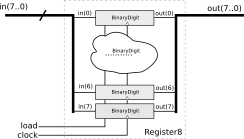
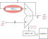

Componentes Síncronos
Leitura necessária
The Elements of Computing Systems (Livro texto do curso), cap 3
Binary digit - bits
Criado com um FlipFlop tipo D, esse componente (que vamos chamar de bit) é capaz de armazenar um bit e será usado na construção das unidades de memória utilizadas na CPU.

DFF = FlipFlop do tipo D
Esse componente funciona da seguinte maneira:
load = '0'FF é realimentando e mantém o valor que foi armazenado.load = '1', na subida do clock o componente 'captura' o valor da entrada in.
Pseudo código que descreve o funcionamento do bit é:
if load = '1' then:
out = in
out = out
Registrador
O registrador é um componente formado por vários bits e é capaz de armazenar um vetor de bits: 8 bits; 16 bits; 32 bits; ... .
Pseudo código que descreve o funcionamento do register e
if load = '1' then:
q[7:0] = d[7:0]
d[7:0] = d[7:0]
Internamente o register é formado por diversos bits, um para cada index do vetor de bits de entrada:

Ele é utilizado geralmente dentro da CPU, como uma memória do tipo 'rápida'.
Note
Podemos utilizar registradores de largura w para construir registradores de largura m*w:
--------------------------------
| ------------- ------------- |
| | reg_8 | | reg_8 | |
| ------------- ------------- |
-------------------------------- reg_16
uso 1

Na nossa CPU do lab 10, o registrador é o HW que armazena a saída da ULA, nesse caso ele possui 16 bits de largura!
Memória RAM
Uma memória é um array de registradores, ela funciona como uma tabela, onde conseguimos armazenar um vetor de bits em algum endereço (linha), a RAM possui as seguintes portas:
inclk: entrada de clockind: entrada do dado a ser armazenado (vetor de bits)inaddress: endereço onde owordserá armazenadoinloadload = '0': não armazena wordload = '1': armazena nova word
outq: saída do valor armazenado no endereçoaddress
O sinal load funciona como um controle se a operação a ser realizada na memória é a de gravar (load = 1) ou apenas ler o que já foi salvo (load = 0).
Pseudo código que descreve o funcionamento da memória RAM
if load = '1' then:
ram[address] = d
else:
q = ram[address]